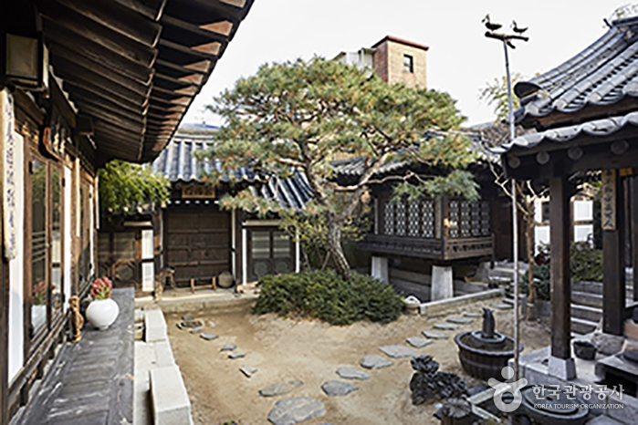

Overview
Hanbang head spas blend Korean herbal medicine with scalp analysis, steam, massage and acupressure.


What to expect
Scalp microscope diagnosis, herbal cleanse, 60–90 min massage, followed by tea.
Clinical note: Prices and outcomes vary. Always confirm the doctor's license, get a written quote, and disclose medications before any procedure.
Recovery & aftercare
No downtime; avoid washing hair for 6 hours to let herbal tonics absorb.
Recovery essentials we recommend
 Cica Repair Cream
Cica Repair Cream Collagen Sheet Masks
Collagen Sheet MasksPlan your stay
FAQ
Do clinics speak English?
Most international-facing clinics have English coordinators; book ahead.
Can I get a VAT refund?
Eligible cosmetic procedures at registered clinics qualify for the medical tourism tax refund.